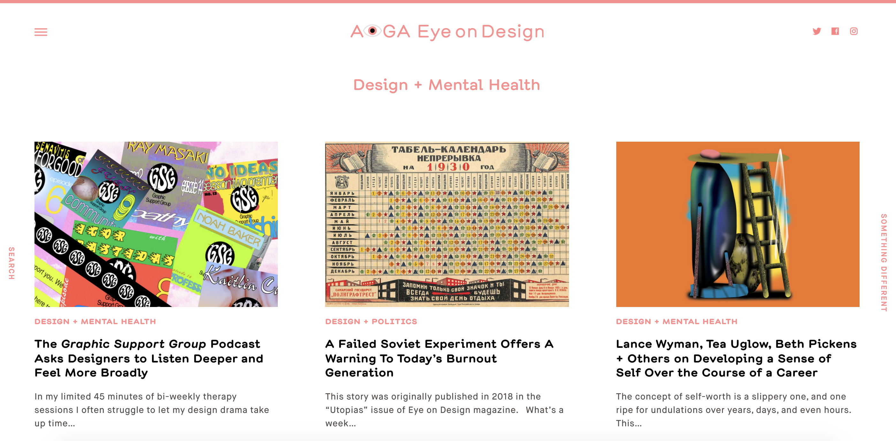
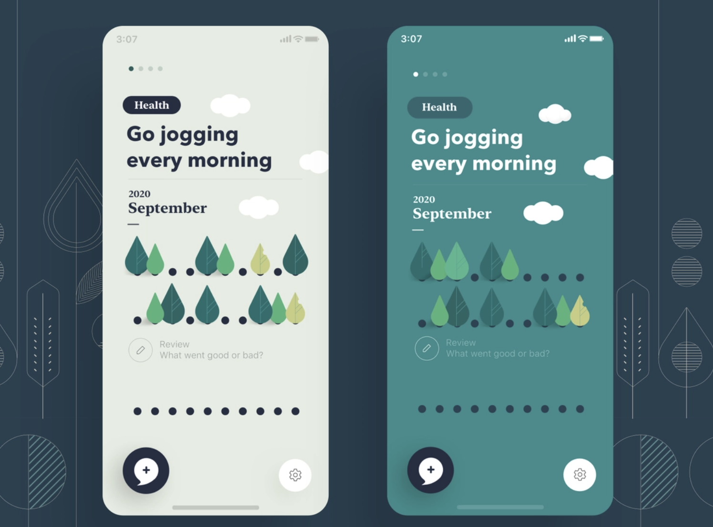

Analysis
10th/Feb
Analysis 1:
This is a website design that provide mental health related graphic designs. In this website, people could go through several visual designs that either sharing the knowledge of mental health issues or sharing the process of treating mental health problems. I like all the graphic designs on this website and I admire how visually attractive they are. I want to learn about how they utilize the colors to connect with mental-health from this project.

Analysis 2:
This project is a mobile App that could record users' daily feelings. Through the daily record, users' mental health could be tracked and analyzed on the App. The most important is that this App provided several interactions that could raise people' s awareness about their own mental health. For example, you can record how your family and friends bring you love and memories. I like the interactions that created on this website and I hope to learn from its simple design. In my project, I wish that users don't have to input a lot of information.
